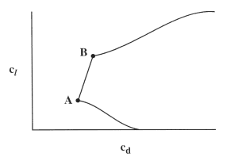

|
|
Theory
In 1975, NASA personnel began working with the Eppler Airfoil Design and Analysis Code (refs. 22 and 34). This code contains a conformal-mapping method for the design of airfoils with prescribed velocity-distribution characteristics, a panel method for the analysis of the potential flow about given airfoils, and a boundary-layer method. With this code, airfoils with prescribed boundary-layer characteristics can be designed and airfoils with prescribed shapes can be analyzed.
In all other inverse methods, the velocity (pressure) distribution is specified at one angle of attack and the airfoil shape that will produce that velocity (pressure) distribution is computed. Thus, the airfoil is designed at a single point. All other conditions are considered "off-design" and must be taken into account intuitively and analyzed later to determine acceptability.
The conformal-mapping method in the Eppler code is unique because it allows the velocity distribution to be specified along different segments of the airfoil at different angles of attack. This is an extremely powerful capability because it allows the important features of many velocity distributions to be incorporated into the airfoil design from the outset. Thus, the airfoil is designed at several points simultaneously and the off-design conditions can be taken into account in the initial specification.
The following sketch helps to illustrate, in a very simplified way, the use of this capability.

As determined from the desired application performance, the airfoil must produce low drag over the range of lift coefficients from points A to B. Point A corresponds to the lift coefficient below which the transition point moves rapidly forward along the lower surface. Thus, for this point, the design of the lower surface is critical. Point B corresponds to the lift coefficient above which the transition point moves rapidly forward along the upper surface. For this point, the upper surface is critical. Using conventional design methods, the velocity distribution must be specified at point A or point B or, possibly, some intermediate point. With the Eppler code, however, the velocity distribution along the lower surface at point A is specified as is the distribution along the upper surface at point B.
It should be noted that the actual, absolute velocity distributions are not specified in the method, only the velocity gradients. For details, see reference 34.
The panel method allows the velocity distribution about a given airfoil to be computed. This is obviously required for the analysis of specified airfoil shapes but, with respect to airfoil design, it is also necessary for determining the effect of a simple flap deflection on the velocity distribution. This method employs third-order panels with vorticity distributed parabolically along each panel.
An integral method is used for the prediction of the boundary-layer development for each velocity distribution. The method can predict laminar and turbulent boundary layers, transition, and separation, both laminar and turbulent. The drag due to laminar separation bubbles is also predicted. The method is semi-empirical and contains a boundary-layer displacement iteration.
An important feature of the Eppler code is the connection between the boundary-layer method and the conformal-mapping method. This connection allows the boundary-layer characteristics to be controlled directly during the airfoil design process. This is a particularly significant capability for the design of laminar-flow airfoils and represents a major step forward from the procedure used to design the NACA laminar-flow airfoils. Now, instead of intuitively or empirically transforming the desired boundary-layer characteristics into a velocity distribution, the designer can determine directly the modifications to the velocity distribution that will produce the desired boundary-layer development at any given angle of attack.
|
|
© 2000 Airfoils, Incorporated.